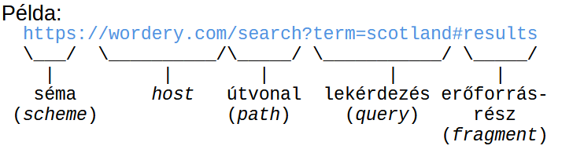
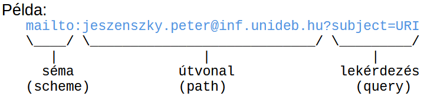

⬅ Vissza a főoldalra
7. tétel: A web működésének alapjai. Web szabványok és szabványügyi szervezetek. URI-k és felépítésük. HTTP: kérések és válaszok felépítése, metódusok, állapotkódok, tartalomegyeztetés, sütik. A web jelölőnyelvei: XML és HTML dokumentumok felépítése. Stíluslap nyelvek. JSON.
Webes Alapfogalmak
- Erőforrás: Bármilyen entitás, amely URI-val azonosítható (pl. egy dokumentum, kép vagy szolgáltatás). Információ erőforrás: Olyan erőforrás, amelynek minden lényeges jellemzője átvihető egyetlen üzenetben.
- URI (Uniform Resource Identifier): A weben használt, erőforrásokat azonosító globális karaktersorozat.
- World Wide Web: Az az információs tér, amelyben a hálózatba kötött erőforrásokat URI-k azonosítják.
- Reprezentáció: Egy erőforrás adott pillanatbeli állapotát leíró adat (pl. egy weboldal HTML vagy JSON formátumban).
- Tartalomegyeztetés: Az a mechanizmus, amikor egy erőforrás több formátumban is elérhető, és a szerver kiválasztja a kliens számára legmegfelelőbb reprezentációt.
- Hivatkozás feloldása: Az URI gyakorlati felhasználása az erőforrás elérésére (legyen az letöltés, módosítás, létrehozás vagy törlés).
- Felhasználói ágens: A felhasználó nevében cselekvő kliensoldali szoftver (a legtipikusabb példája a webböngésző).
Web Szabványok és Típusaik
A szabvány olyan dokumentált követelmény-, irányelv- vagy specifikáció-halmaz, amely biztosítja, hogy a különböző rendszerek és technológiák egységesen és rendeltetésszerűen működjenek együtt.
A szabványok három fő típusa:
- De facto (tényleges): Nem hivatalos szervezet hozta létre, hanem a piaci dominancia és a széleskörű használat emelte szabvánnyá. (Példa: QWERTY billentyűzetkiosztás, TeX dokumentumformázó)
- De jure (jogi): Törvényi, állami vagy hivatalos nemzetközi szervezet által kötelezően előírt szabvány. (Példa: SI nemzetközi mértékegységrendszer)
- Önkéntes közmegegyezés: Szakmai vagy magánintézmények által közösen kidolgozott szabványok. (Példa: TCP/IP protokoll, HTML, CSS)
Szabványosító Szervezetek
1. IANA (Internet Assigned Numbers Authority)
Az internet "számkiosztó hatósága". Feladata az internet zavartalan működéséhez szükséges globális azonosítók kezelése:
- Kiosztja és koordinálja az IP-címeket.
- Felügyeli a DNS gyökérzónákat (pl.
.int, .arpa).
- Nyilvántartja a különböző internetes protokollokhoz tartozó portokat és kódokat.
2. IETF (Internet Engineering Task Force)
Az internet architekturális és protokoll-szintű fejlesztéséért felelős nyílt szervezet.
- Fő fókuszuk a TCP/IP protokollcsalád fejlesztése és karbantartása.
- Nincs formális tagság; a munkát nyitott munkacsoportokban végzik, amihez bárki csatlakozhat.
3. W3C (World Wide Web Consortium)
A legfőbb nemzetközi közösség, amely a webes technológiák szabványosításáért (pl. HTML, CSS, XML) felel. 1994-ben alapították az MIT-n.
- Alapelvei:
- „Web mindenkinek” (függetlenül a hardvertől, szoftvertől, nyelvtől vagy fizikai képességektől – fókuszban az akadálymentesítés és nemzetköziesítés).
- „Web mindenhol” (eszközfüggetlen hozzáférés PC-n, mobilon, okoseszközökön).
A W3C technikai dokumentumainak érettségi szintjei (Standards Track):
- Munkaterv (Working Draft - WD): Áttekintésre szánt korai verzió, amelyből nem feltétlenül lesz szabvány.
- Előzetes javaslatterv (Candidate Recommendation - CR): Áttekintett fázis, célja a gyakorlati implementációs tapasztalatok gyűjtése.
- Javaslatterv (Proposed Recommendation - PR): Érett, jól tesztelt dokumentum, amely már csak a végső jóváhagyásra vár.
- Ajánlás (Recommendation - REC): A hivatalosan elfogadott, széles körben alkalmazott webszabvány.
- Egyéb státuszok: Csoport feljegyzés (félbehagyott munka), Túlhaladott (van újabb verziója), Elavult (már nem releváns a piacon), Visszavont (a W3C hivatalosan nem támogatja többé).
4. WHATWG (Web Hypertext Application Technology Working Group)
Egy iparági szereplőkből (Apple, Mozilla, Google, Microsoft) álló közösség, amely a HTML és a modern webalkalmazásokhoz szükséges "élő szabványok" folyamatos fejlesztését végzi (pl. DOM, Fetch, WebSockets).
URI-k és Felépítésük
URI (Uniform Resource Identifier - Egységes Erőforrás-azonosító)
- Lényeg: Egy karaktersorozat, amely egy absztrakt vagy fizikai erőforrást azonosít (akár a való világ tárgyait is).
- Felügyelet: Az URI sémákat az IANA (Internet Assigned Numbers Authority) adminisztrálja.
- Kinézet: Általános formája:
sémanév:sémaspecifikus_rész. A pontos szintaxist mindig az adott séma specifikációja határozza meg.
- Gyakori sémák:
http:, https:, file:, mailto:, about:
- Típusok (URL és URN): Az URL (Locator) és az URN (Name) az URI specifikus alkategóriái. Míg az URN csak megnevezi az erőforrást (pl. egy könyv ISBN száma), az URL a hálózati elérhetőségének pontos helyét és módját is megadja.
Az URI Általános Szintaxisa
Teljes formátuma: séma:[//authority]path[?lekérdezés][#erőforrásrész]


Az egyes komponensek részletesen:
- Séma: Meghatározza a protokollt vagy a célt. Ezt mindig egy kettőspont zárja le.
- Jogosultság (Authority): Két perjel (
//) vezeti be. Meghatározza, hogy az URI további része milyen fennhatóság alá tartozik.
- Felépítése:
[felhasználói_adatok '@'] host [:port]
- Példa:
user:pass@www.pelda.hu:80 (A HTTP alapértelmezett portja a 80).
- Útvonal (Path): A hierarchikus adatokat tartalmazza, a mappaszinteket perjel (
/) választja el.
- Az első
? vagy # karakterig (illetve az URI végéig) tart.
- Fájlrendszerekhez hasonlóan használhatók benne a
. (aktuális mappa) és .. (szülő mappa) jelölések.
- Szabály: Ha nincs Authority megadva, az útvonalnak üresnek kell lennie, vagy perjellel (
/) kell kezdődnie.
- Lekérdezés (Query): Nem hierarchikus kiegészítő adatokat, paramétereket tartalmaz.
- Kérdőjellel (
?) kezdődik, és a # karakterig vagy az URI végéig tart.
- Általában kulcs-érték párokból áll (
név=érték), amelyeket és-jel (&) választ el egymástól.
- Erőforrásrész-azonosító (Fragment): Egy másodlagos erőforrást (például egy adott bekezdést a weboldalon belül) azonosít.
- Kettőskereszttel (
#) kezdődik, és az URI végéig tart.
- Jelentését mindig az elsődleges erőforrás letöltött reprezentációja (és annak médiatípusa) határozza meg.
HTTP (Hypertext Transfer Protocol)
Az HTTP egy állapotmentes, alkalmazásszintű, kérés-válasz (request-response) alapú protokollcsalád, amely a webes kommunikáció alapját jelenti.
Főbb jellemzők
- Egységes interfész: Szabványosított üzenetküldésen alapuló interakciót biztosít az erőforrásokkal.
- Kliens-Szerver modell: A működés a kliens (kérés küldője) és a szerver (válaszadó) közötti üzenetcserére épül.
- Állapotmentes (Stateless): Az egymást követő kéréseket a rendszer függetlenül kezeli, a szerver alapértelmezetten nem "emlékszik" az előző tranzakciókra.
- Kiterjeszthető: Új protokollverzió kiadása nélkül is bővíthető új metódusokkal, állapotkódokkal és fejlécmezőkkel.
- Evolúció (HTTP/2 és HTTP/3): Bár az alapokat a HTTP/1.1 fektette le, a modern web már a HTTP/2 és HTTP/3 protokollokat használja, amelyek az egyidejű (multiplexált) adatátvitel révén jelentősen gyorsítják az oldalak betöltését.
Az HTTP Üzenetek Felépítése
- Vezérlő adatok (Start-line): Az üzenet elsődleges célját határozza meg.
- Kérés esetén (Request line): Metódus, cél (URI), protokoll verziója.
- Válasz esetén (Status line): Protokoll verziója, állapotkód, opcionális indoklás.
- Fejléc (Header): A tényleges tartalom (Body) előtt küldött metaadatok, kulcs-érték párok formájában.
- Tartalom (Body/Payload): A továbbított adat (pl. maga a letöltött HTML fájl vagy a beküldött űrlap adatai). Nem minden üzenet tartalmazza.
- Lezáró szakasz (Trailer): Opcionális metaadatok a tartalom átvitele után.
HTTP KÉRÉS (Kliens küldi)
GET /index.html HTTP/1.1 <-- Vezérlő adat: Metódus (GET), Cél URI, Protokoll verzió
HTTP VÁLASZ (Szerver küldi)
HTTP/1.1 200 OK <-- Vezérlő adat: Protokoll, Állapotkód (200=Siker), Indoklás
<html><body>Szia</body></html><-- Tartalom (Body): Maga a lekért adat (pl. weboldal kódja)
HTTP Metódusok
- GET: Információ lekérése. A cél-erőforrás reprezentációját kéri be (a
Range fejléc használatával az erőforrás csak egy része is lekérhető).
- HEAD: Megegyezik a GET-tel, de a szerver nem küldhet tartalmat (Body-t) a válaszban. Sávszélesség-kímélő módon használható metaadatok (fejlécek) ellenőrzésére.
- POST: Adatok küldése a cél-erőforrásnak feldolgozásra (pl. űrlap elküldése, új bejegyzés létrehozása, adatok hozzáfűzése).
- PUT: Egy cél-erőforrás állapotának létrehozása, vagy ha már létezik, annak teljes felülírása/helyettesítése.
- DELETE: A megadott cél-erőforrás (és a hozzá tartozó funkcionalitás) törlése a szerverről.
Állapotkódok
- 1xx (Információs): A kapcsolat létrejött, a kérés feldolgozása folyamatban van (átmeneti válasz).
- 2xx (Siker): A kérés sikeresen megérkezett, a szerver értelmezte és elfogadta (pl. 200 OK).
- 3xx (Átirányítás): A kérés teljesítéséhez a kliensnek további műveleteket kell végeznie (pl. automatikus átirányítás egy másik URL-re).
- 4xx (Kliens hiba): A kérés nem teljesíthető a kliens hibájából (pl. rossz szintaxis, vagy 404 Not Found - nem található az erőforrás).
- 5xx (Szerver hiba): A szerver nem tudott teljesíteni egy amúgy érvényes, jól megfogalmazott kérést (pl. 500 Internal Server Error).
Tartalomegyeztetés
Egy adott webcímhez (URI) gyakran több változat is tartozik (pl. angol vagy magyar nyelv, PNG vagy WebP kép). A tartalomegyeztetés az a folyamat, amely során a kliens (böngésző) és a szerver megegyezik abban, hogy a sok változat közül melyik kerüljön letöltésre.
1. Proaktív (Szerver vezérelt) egyeztetés
A kliens már az első kérésben elküldi a preferenciáit (pl. milyen nyelvet vagy formátumot támogat). A szerver dönt arról, hogy a raktáron lévő változatok közül melyiket küldi vissza.
- Előnyök:
- Gyors: Nincs plusz hálózati kör, azonnal megkapjuk a választ (1 kérés = 1 válasz).
- A döntési logika a szerveren van, a kliensnek nem kell bonyolult választó algoritmust futtatnia.
- Hátrányok:
- Felesleges adatforgalom: A kliensnek minden kéréshez hozzá kell fűznie a teljes kívánságlistáját.
- Pontatlanság: A szerver csak tippelni tud, előfordulhat, hogy nem a legjobb verziót küldi.
- Gyorsítótárazás (Cache): Nehezebb cache-elni, mert a válasz kliensfüggő.
2. Reaktív (Kliens vezérelt) egyeztetés
A szerver nem dönt a kliens helyett. Ehelyett visszaküld egy listát az elérhető változatokról (pl. "Van magyar és angol verzióm"). A kliens választ, majd egy újabb kérésben lekéri a konkrét fájlt.
- Előnyök:
- Pontos: A kliens tudja a legjobban, mire van szüksége, így biztosan a jó verziót kapja.
- Hasznos, ha a szerver nem tudja megállapítani a kliens képességeit.
- Hátrányok:
- Lassabb: Két kérés-válasz körre van szükség (lista lekérése + konkrét fájl lekérése).
- A HTTP nem biztosít ehhez tökéletes, automatikus mechanizmust (sokszor manuális beavatkozást, pl. nyelvválasztó gombot igényel).
Tartalomegyeztetési Fejlécmezők (Headers)
Ezekkel a mezőkkel mondja el a kliens (böngésző) a proaktív egyeztetés során, hogy mik az igényei:
Accept: Támogatott fájlformátumok (pl. text/html, image/webp).Accept-Charset: Támogatott karakterkódolás (pl. UTF-8).Accept-Encoding: Támogatott tömörítési eljárások (pl. gzip).Accept-Language: Preferált nyelvek listája (pl. hu-HU, en-US).User-Agent: A kliens szoftver és operációs rendszer azonosítója.
HTTP Sütik (Cookies)
Lényeg:
A süti egy név-érték pár és a hozzá tartozó metaadatok (attribútumok) összessége. A szerver küldi el a böngészőnek (felhasználói ágensnek) a válasz Set-Cookie fejlécében. A böngésző ezt eltárolja, majd a későbbi kérések során visszaküldi a szervernek.
Fő felhasználási területek:
- Munkamenet-kezelés (Session management): Pl. felhasználói bejelentkezések, kosár tartalmának megjegyzése.
- Testreszabás: Pl. felhasználói preferenciák, nyelvi beállítások, sötét mód megjegyzése.
- Webes követés (Tracking): Pl. látogatói analitika és célzott hirdetések megjelenítése.
Működési mechanizmus:
- Létrehozás: A szerver elküldi a
Set-Cookie fejlécet az adatokkal és az attribútumokkal (amik a süti hatáskörét és élettartamát szabályozzák).
- Tárolás: A böngésző elmenti a sütit a kapott attribútumok alapján.
- Visszaküldés: Minden további releváns HTTP kérésnél a böngésző a
Cookie fejlécben visszaküldi a szervernek az érvényes (még nem lejárt) sütiket. Fontos: ilyenkor már csak a név-érték párokat küldi, az attribútumokat nem!
- Felülírás: Ha a böngésző olyan új
Set-Cookie fejlécet kap, amelynek a Neve, a Domain és a Path attribútuma pontosan megegyezik egy már letárolt sütiével, akkor automatikusan lecseréli a régit az újra.
Fontos Attribútumok:
Expires: A süti lejáratának pontos dátuma (mikor törlődjön).Max-Age: A süti élettartama másodpercben kifejezve (ha ez jelen van, felülírja az Expires-t).Domain: Megadja, hogy melyik domain névhez (pl. pelda.hu) tartozik a süti.Path: Megadja az URL specifikus útvonalát (pl. /admin), ahol a süti érvényes.Secure: Ha be van állítva, a süti kizárólag titkosított (HTTPS) kapcsolaton keresztül utazhat a hálózaton.HttpOnly: A sütit csak hálózati (HTTP/HTTPS) kéréseken keresztül lehet elérni, a böngészőben futó JavaScript (kliensoldali kód) nem férhet hozzá. Ez az XSS (Cross-Site Scripting) támadások elleni védekezés fontos eszköze.
Web jelölőnyelvei: XML, HTML, DOM
Jelölőnyelvek (Markup Languages): Olyan mesterséges nyelvek, amelyek szöveges dokumentumok szerkezeti és szemantikai (jelentéstani) leírására szolgálnak, a szövegbe ágyazott címkék (tagek) segítségével.
XML (Extensible Markup Language - Bővíthető jelölőnyelv)
Általános célú, szigorú szabályrendszerű jelölőnyelv. Kifejezetten adatstruktúrák tárolására, leírására és cseréjére hozták létre (azt írja le, hogy mi az adat, nem azt, hogy hogyan nézzen ki).
- Szintaxis és "Jól formázottság" (Well-formedness): Az XML rendkívül szigorú. Minden nyitó taget be kell zárni, az elemek nem keresztezhetik egymást (szigorú hierarchia), és kötelező egyetlen közös gyökérelem (root) megléte.
- Előnyei:
- Egyszerű, sima szöveges formátum (ember és gép számára is olvasható).
- Nyílt, gyártó- és platformfüggetlen (tökéletes univerzális adatcserére különböző rendszerek között).
- Bővíthető: a fejlesztő saját címkéket (tageket) definiálhat benne.
- A nagyvállalati szférában sokáig de-facto szabvány volt.
- Hátrányai:
- Bőbeszédű (redundáns): a sok nyitó/záró tag miatt nagy a fájlméret és a sávszélesség-igény.
- A szigorú szintaxis miatt bonyolultabb a feldolgozása (manapság a modern webes kommunikációban a JSON sok helyen kiszorította).
Felhasználási típusai:
- Dokumentumközpontú XML: Folyó szöveg, jelölésekkel kiegészítve. Az elemek sorrendje kritikus. Emberi fogyasztásra szánt, változatos szerkezetű (pl. XHTML, DocBook, RSS-hírcsatornák).
- Adatközpontú XML: Erősen strukturált, nagy számú adatelemből áll. A sorrend kevésbé fontos, kifejezetten gépi feldolgozás a célja (pl. SVG vektoros képek, SOAP webszolgáltatások üzenetei, szoftveres konfigurációs fájlok).
HTML (HyperText Markup Language)
A web elsődleges leíró nyelve. Míg az XML az adatokat definiálja, a HTML az adatok böngészőbeli strukturálására és megjelenítésére fókuszál. A statikus dokumentumoktól a modern dinamikus webalkalmazásokig minden erre épül.
- Szemantikus web (HTML5): A modern HTML-ben az elemeknek, attribútumoknak pontos jelentése (szemantikája) van. Egy
<article>, <header> vagy <nav> tag nemcsak formáz, hanem elmondja a böngészőnek, a felolvasóprogramoknak és a keresőmotoroknak, hogy mi az a tartalom.
- Alapszabály: Tilos az elemeket a rendeltetésüktől eltérő céllal használni (például nem használunk
<table> táblázatot az oldal vizuális elrendezésére, arra a CSS való).
- Tartalommodell: Minden elemnek van egy szigorú szabályrendszere, hogy mit tartalmazhat (pl. egy bekezdés
<p> nem tartalmazhat egy blokk-szintű <div> elemet).
- Szerepköre: A HTML adja az oldal csontvázát és tartalmát (a CSS a külalakot, a JavaScript a viselkedést).
DOM (Document Object Model)
A DOM egy nyelv- és platformfüggetlen alkalmazásprogramozási interfész (API). Amikor a böngésző letölt egy HTML vagy XML dokumentumot, azt a memóriában egy hierarchikus fa-struktúraként (DOM fa) építi fel.
- A DOM fa felépítése:
- Document node: Maga a teljes dokumentum, a fa gyökere.
- Element node: A HTML címkék (pl.
<html>, <body>, <h1>, <a>).
- Attribute node: Az elemek tulajdonságai (pl. egy link
href="URL" attribútuma).
- Text node: A címkék közötti tényleges, olvasható szöveg.
- Miért elengedhetetlen? A DOM köti össze a weboldalt a programozási nyelvekkel (legfőképp a JavaScripttel). Ezen az API-n keresztül tud a JavaScript rácsatlakozni a HTML-re: a kód képes a DOM fát bejárni, elemeket keresni, módosítani a tartalmukat/stílusukat, törölni őket, vagy újakat hozzáadni valós időben – mindezt anélkül, hogy a teljes weboldalt újra kellene tölteni.
CSS (Cascading Style Sheets) Alapfogalmak
A CSS strukturált (HTML/XML) dokumentumok megjelenítésének leírására szolgáló stíluslap nyelv.
- Lényege: A tartalom (HTML) és a formázás (CSS) élesen elválik egymástól.
- Verziókezelés: Nincsenek hagyományos verziói (mint pl. HTML5), hanem szintjei és moduljai vannak.
- A CSS Level 1 elavult, a Level 2 (2.1) az alap specifikáció.
- A Level 3 modulárisan frissíti a kettest.
- CSS 4 mint egységes verzió nem létezik, csak önálló modulok érték el a 4-es szintet.
A Dobozmodell (Box Model)
A CSS egy dobozfát állít elő, ahol minden elemhez nulla vagy több téglalap alakú dobozt generál a display tulajdonság alapján.
Minden doboz négy fő részből áll: tartalom (content), belső margó (padding), keret (border) és külső margó (margin).
- Méretezés (
box-sizing):
content-box (alapértelmezett): a megadott szélesség (width) és magasság (height) szigorúan csak a tartalomra vonatkozik, a keret és a belső margó (padding) ehhez még hozzáadódik.border-box: a megadott méretek a szemmel látható méretet jelentik, vagyis magukba foglalják a tartalom, a padding és a border méretét is.
Szintaxis és Szabályok
- Deklarációs blokk: Kapcsos zárójelek
{ } között lévő név: érték párok, amelyeket pontosvessző választ el.
- Shorthand property: Összevont tulajdonságok, amelyekkel egyszerre több érték adható meg (pl. a
margin beállítja a margin-top, -right, -bottom, -left értékeket egyszerre).
- Hibakezelés: A CSS rendkívül elnéző. Ha szintaktikai hibát talál, csak a minimálisan szükséges érvénytelen részt dobja el, és folytatja a feldolgozást.
Kiválasztók (Selectors)
Mintaillesztésre szolgálnak, ezek mondják meg, hogy a szabály mely elemekre vonatkozik.
- Alap kiválasztók:
- Típus: A HTML elem neve (pl.
p, a).
- Osztály (Class):
.osztalynev.
- ID:
#azonosito.
- Általános:
* (minden elemre illeszkedik).
- Attribútum:
[att=érték] (pl. input[type="text"]).
- Kombinátorok:
- Leszármazott: Szóköz (pl.
thead th – a thead-en belüli összes th).
- Gyermek:
> (csak a közvetlen gyermekek).
- Szomszéd testvér:
+ (a közvetlenül utána következő elem).
- Pszeudo-osztályok (
:) és Pszeudo-elemek (::):
- Dinamikus pszeudo-osztályok: A felhasználói interakciók alapján működnek (pl.
:link, :visited, :hover, :active).
- Szerkezeti pszeudo-osztályok: A dokumentumban elfoglalt hely alapján választ (pl.
:first-child, :nth-child()).
- Pszeudo-elemek: A dokumentum olyan részei, amik nem jelölnek külön elemet (pl.
::first-line, vagy újat generálnak, mint a ::before, ::after).
Kaszkád, Specifikusság és Öröklés
Ezek a szabályok döntik el, mi történik, ha egy elemhez több, egymásnak ellentmondó stílus is tartozik.
- Specifikusság: Egy három számú
(a, b, c) vektor alapján dől el, melyik szabály erősebb.
a: ID kiválasztók száma.b: Osztályok, attribútumok, pszeudo-osztályok száma.c: Típusok és pszeudo-elemek száma.
- Kaszkád folyamata (Sorrendiség): Ha több szabály verseng, a győztest az alábbi sorrend dönti el:
- Eredet: (
!important felülír mindent, utána Szerzői stílus > Felhasználói stílus > Böngésző alapértelmezett stílusa).
- Specifikusság: Az erősebb szabály nyer. A hierarchia csúcsán az elemen belüli (inline) stílus áll (pl.
<p style="...">), ezt követi a vektor alapján az ID, az osztályok, majd a típusok.
- Előfordulási sorrend: (amelyik később szerepel a kódban, az a legerősebb).
- Öröklés: Bizonyos értékeket a gyermek elemek megkapnak a szülőtől (pl. betűtípus
font-family), míg másokat (pl. margó margin) nem.
CSS Előfeldolgozók (pl. SASS)
Programozási lehetőségekkel egészítik ki a CSS-t, amiből a végén sima CSS fájlt generálnak (fordítanak).
- Támogatják az egysoros megjegyzéseket (
//), változókat ($size: 2em;), beépített függvényeket, valamint a szabályok egymásba ágyazását.
JSON (JavaScript Object Notation)
A JSON egy könnyűsúlyú, szöveges és nyelvfüggetlen adatcsere formátum.
- Lényege: Strukturált adatok ábrázolására szolgál. Ember számára könnyen írható és olvasható, a szoftverek számára pedig egyszerűen generálható és feldolgozható.
- Eredete: Az ECMAScript programozási nyelvből származik. A szintaxisán alapul, de nem teljesen kompatibilis vele.
Adattípusok a JSON-ben
A JSON kétféle típust különböztet meg: primitív és strukturált típusokat.
1. Primitív típusok:
- Számok: Nincs korlátozás a tartományukra és pontosságukra.
- Sztringek (Szöveg): Idézőjelek határolta Unicode karaktersorozatok. Bármely karaktert tartalmazhatják, de az idézőjelet, a backslash-t és a vezérlő karaktereket le kell védeni. Használhatók a szokásos escape szekvenciák (pl.
\n, \t), vagy hexadecimális megadások (\unnnn) is.
- Logikai értékek
- Null
2. Strukturált típusok:
- Tömbök: Tetszőleges számú érték rendezett sorozata. Lehet üres is, és a benne lévő elemek típusa eltérhet egymástól.
- Objektumok: Tetszőleges számú név-érték pár (tag/member) összessége.
JSON és XML Összehasonlítása
A JSON gyakran az XML alternatívája, mivel ugyanazokat az előnyöket nyújtja, de az XML hátrányai nélkül.
Közös tulajdonságok:
- Egyszerűek (bár a JSON még egyszerűbb).
- Ember számára könnyen értelmezhetők, szoftver számára pedig könnyen feldolgozhatók.
- Nyíltak és kiválóan támogatják az interoperabilitást.
- Önleíró, univerzális adatcsere formátumok.
Fő különbségek:
- Fókusz: A JSON adatorientált, míg az XML dokumentumorientált.
- Méret: A JSON kevésbé bőbeszédű, így sokkal alkalmasabb adatszerkezetek tömör ábrázolására.
- Infrastruktúra: Az XML ugyanakkor dokumentumközpontú alkalmazásokhoz jobb, mivel kiterjeszthető és sokkal kiforrottabb infrastruktúrával rendelkezik.